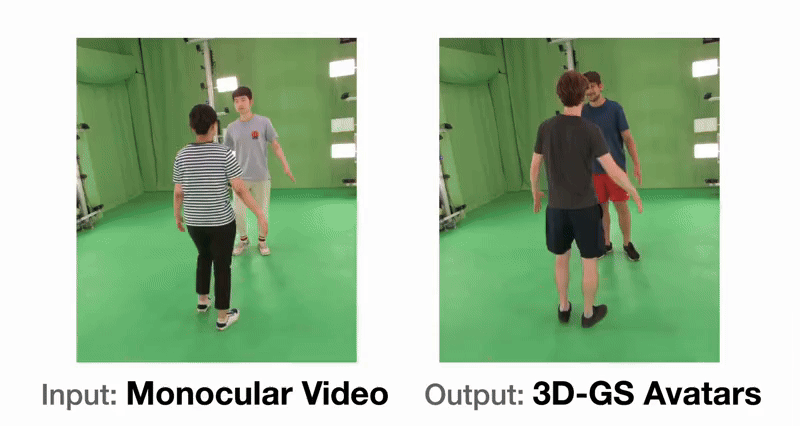

In preprint 2026
[Paper] [Project Page]

In preprint 2026
[Paper] [Project Page] [Code]

In NeurIPS 2025
[Paper] [Project Page] [Code]

In CVPR 2025
[Paper] [Project Page] [Code]

In CVPR 2024
[Paper] [Project Page] [Code]
I am a MS/PhD (2023-) student at the SNU Visual Computing Lab, advised by Hanbyul Joo. I am interested in reconstructing and understanding the dynamic 3D world—humans, objects, scenes, and the interactions among them—from real-world observations. I am currently working on modeling how the world behaves, so that it can be reasoned about, not just visualized.
|
Nov2025 A paper got accepted in NeurIPS 2025
|
|
OmniRobotHome: A Multi-Camera Home Platform for Real-Time Human-Robot Interaction
In preprint 2026 [Paper] [Project Page] |
|
|
SimuScene: Simulation-Ready Compositional 3D Scene Reconstruction from a Single Image
In preprint 2026 [Paper] [Project Page] [Code] |
|
|
Learning to Generate Human-Human-Object Interactions from Textual Descriptions
In NeurIPS 2025 [Paper] [Project Page] [Code] |
|
|
PERSE: Personalized 3D Generative Avatars from A Single Portrait
In CVPR 2025 [Paper] [Project Page] [Code] |
|
 |
Guess The Unseen: Dynamic 3D Scene Reconstruction from Partial 2D Glimpses
In CVPR 2024 [Paper] [Project Page] [Code] |
SNU VCL
KAIST NICA Lab
KC-ML2
Latest Update: Jun 2026
Template from Hanbyul Joo's website